Contents
close all;
clear;
Exercice 1
src = imread('theArtist.png');
figure;
imshow(src);
title("Image de depart");
src_egal = Egalisation_Histogramme(src);
type Egalisation_Histogramme.m;
figure;
imshow(src_egal);
title("Question 1 - Image avec egalisation d'Histogramme");
mask = [1,2,1,2,1; 2,4,8,4,2; 1,8,18,8,1; 2,4,8,4,2; 1,2,1,2,1]/90;
result = Convolution(src_egal, mask);
type Convolution.m;
figure;
imshow(result);
title("Question 2 et 3 - Image avec gaussienne et egalisation d'Histogramme")
img_contour = Rehaussement_Contour(src_egal, 1.2);
type Rehaussement_Contour.m;
figure;
imshow(img_contour);
title("Question 4 - Image avec rehaussement de contour")
function eg = Egalisation_Histogramme(src)
hist = imhist(src);
cumhist = cumsum(hist);
normcumhist = cumhist/max(cumhist);
[h,w] = size(src);
result = zeros(h,w);
for i = 1:h
for j = 1:w
result(i,j) = normcumhist(src(i,j)+1);
end
end
eg = result;
end
%le masque doit etre normalise avant d'etre envoye a la fonction.
function c = Convolution(img, mask)
[wm,hm] = size(mask);
[wi,hi] = size(img);
if(mod(wm,2) ~= 1 || mod(hm,2) ~= 1 || wm ~= hm)
disp("le masque doit etre un carre de dimension impaire.")
c = img;
else
padded = zeros(wi + wm - 1, hi + hm - 1);
padded(((wm-1)/2)+1:((wm-1)/2)+wi,((hm-1)/2)+1:((hm-1)/2)+hi) = img;
result = zeros(wi, hi);
for i = 1:wi
for j = 1:hi
result(i,j) = sum(sum(padded(i:i+wm-1, j:j+hm-1).*mask));
end
end
c = result;
end
end
function rc = Rehaussement_Contour(img, k)
gaussian = [1,2,1;2,4,2;1,2,1]/16;
laplacian = [-1,-1,-1;-1,8,-1;-1,-1,-1];
img_gauss = Convolution(img, gaussian);
img_laplacian = Convolution(img_gauss,laplacian);
rc = img_gauss+k*img_laplacian;
end
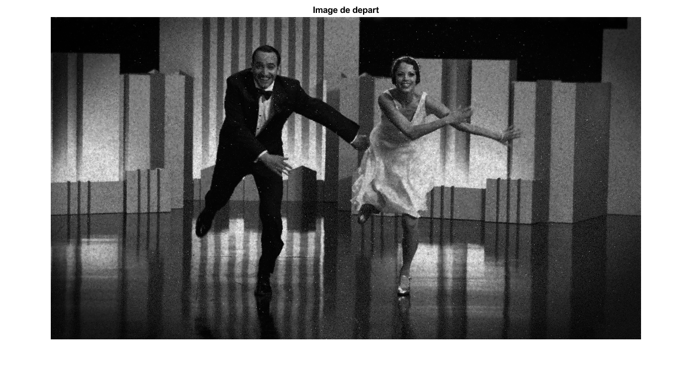 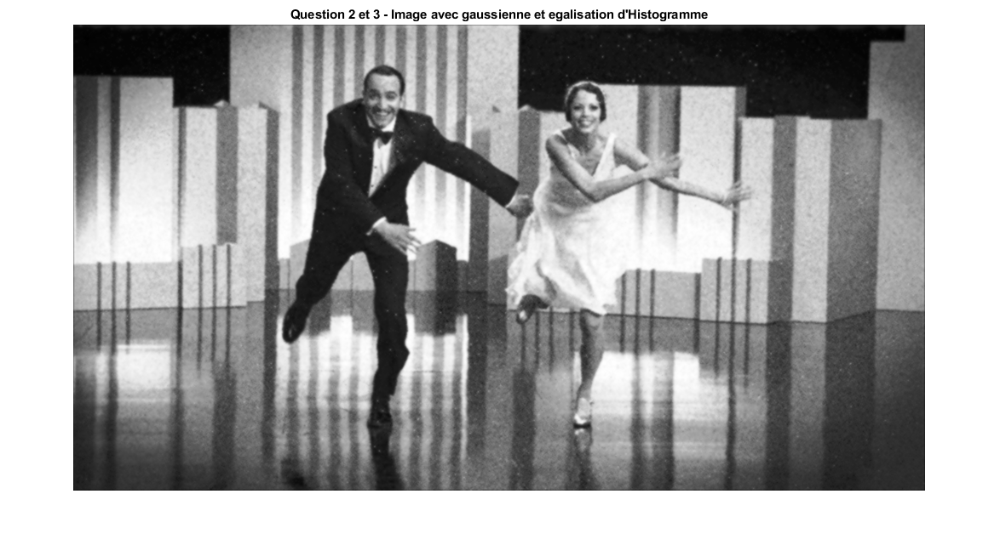 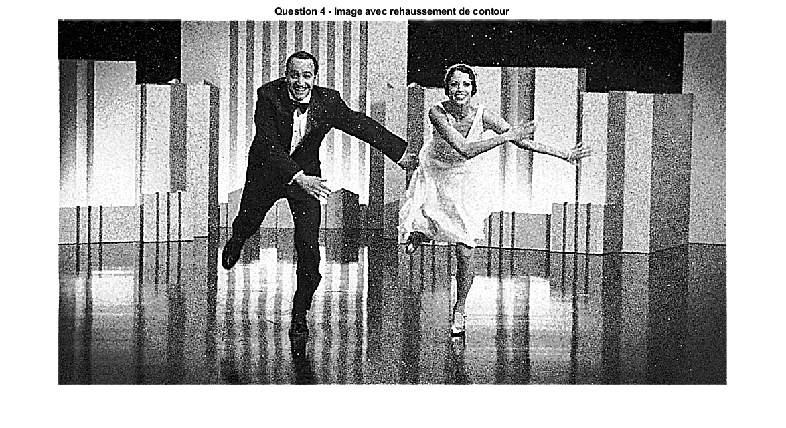
Exercice 2
color_img = imread('pieces.jpg');
gray_img = rgb2gray(color_img);
figure;
imshow(gray_img);
title("Question 1 - Image en niveau de gris")
bin_img = Binariser(gray_img, 250);
type Binariser.m;
inverse_bin_img = imcomplement(bin_img);
figure;
imshow(inverse_bin_img);
title("Question 2 - Image binarise inverse")
se = strel('disk', 10);
closed_img = imclose(inverse_bin_img,se);
figure;
imshow(closed_img);
title("Question 3 - Image refermee");
monnaie = Compter_Monnaie(closed_img);
type Compter_Monnaie.m;
disp("il y a "); disp(monnaie); disp(" $ dans cette photo.");
Warning: Image is too big to fit on screen; displaying at 33%
function b = Binariser(img, threshold)
[w, h] = size(img);
for i = 1:w
for j = 1:h
if img(i,j) < threshold
img(i,j) = 0;
else
img(i,j) = 255;
end
end
end
b = img;
end
Warning: Image is too big to fit on screen; displaying at 33%
Warning: Image is too big to fit on screen; displaying at 33%
Warning: Image is too big to fit on screen; displaying at 33%
function monnaie = Compter_Monnaie(img)
total = 0;
%retirer les elements trop gros...
se = strel('disk', 200);
imgb = imerode(img, se);
imgb = imdilate(imgb, se);
img = img - imgb;
%2 dollars
se = strel('disk', 140);
img2d = imerode(img, se);
img2d = imdilate(img2d, se);
[a,count] = bwlabel(img2d);
total = total + 2*count;
img = img - img2d;
%25 sous
se = strel('disk', 120);
img25s = imerode(img, se);
img25s = imdilate(img25s, se);
[a,count] = bwlabel(img25s);
total = total + 0.25*count;
img = img - img25s;
%5 sous
se = strel('disk', 110);
img5s = imerode(img, se);
img5s = imdilate(img5s, se);
[a,count] = bwlabel(img5s);
total = total + 0.05*count;
img = img - img5s;
%10 sous
se = strel('disk', 90);
img10s = imerode(img, se);
img10s = imdilate(img10s, se);
[a,count] = bwlabel(img10s);
total = total + 0.10*count;
img = img - img10s;
figure;
imshow(img);
title("image finale");
monnaie = total;
end
il y a
5.6500
$ dans cette photo.
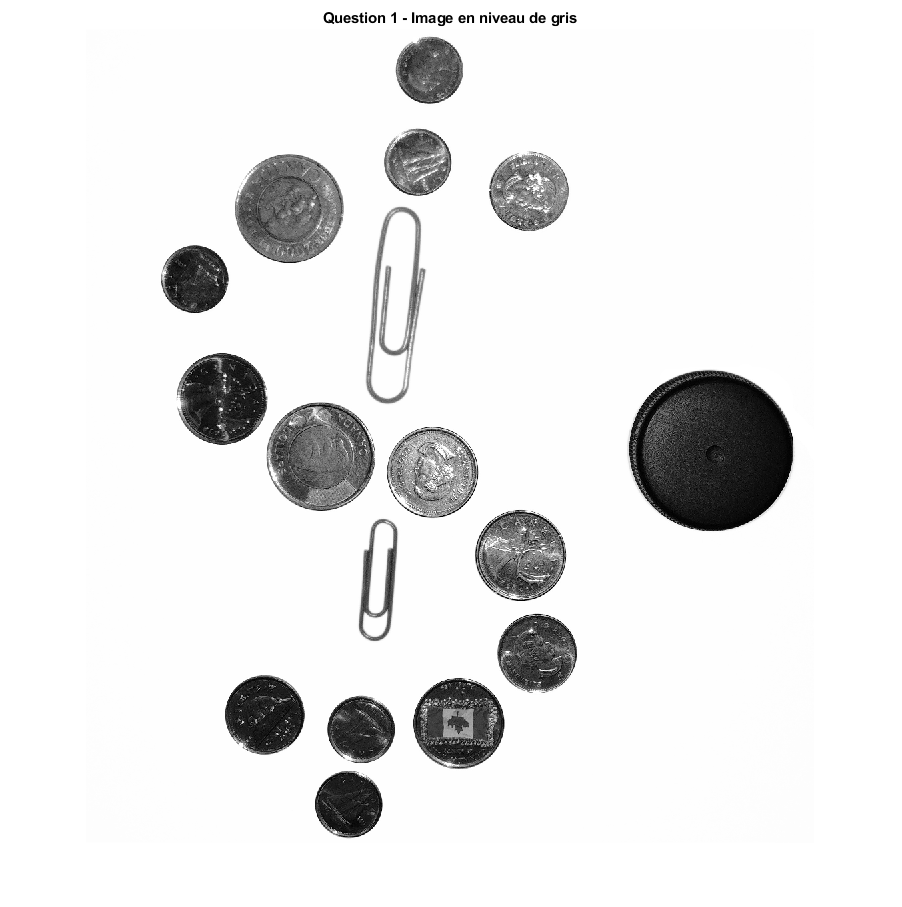 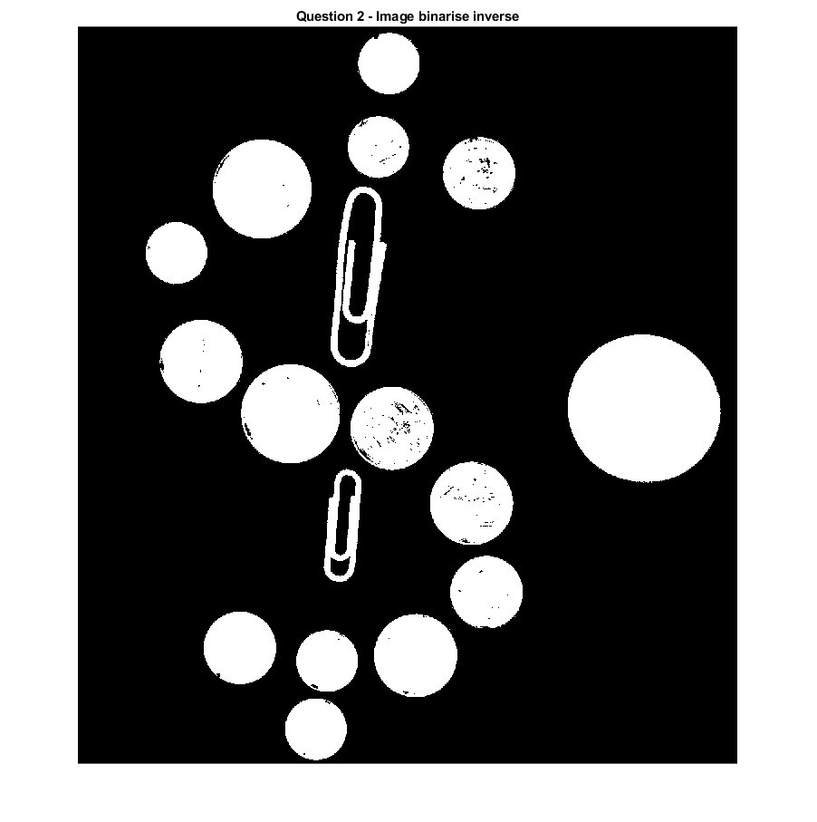 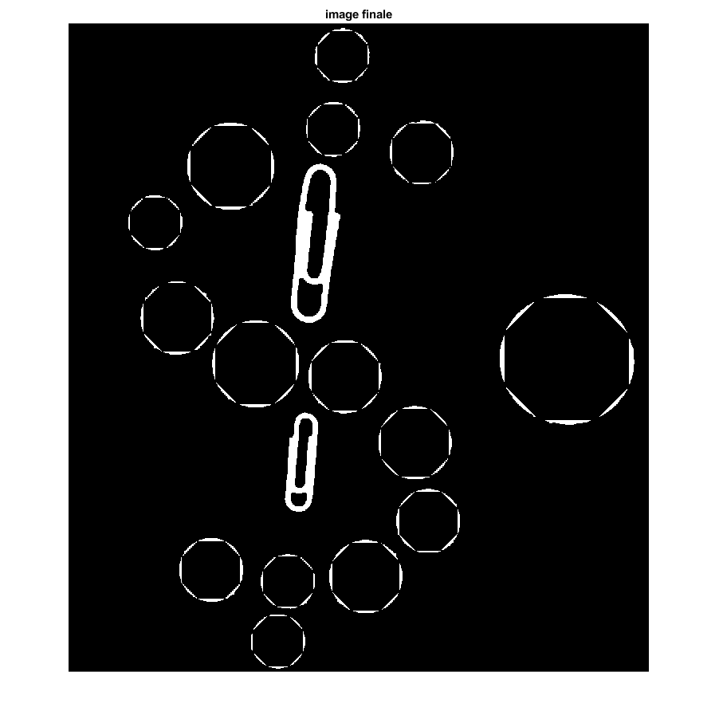
Exercice 3
vert = imread('Barres_Verticales.png');
obl = imread('Barres_Obliques.png');
hor = imread('Barres_Horizontales.png');
figure;
imshow(vert);
title("Question 1 - Barres Verticales");
figure;
imshow(obl);
title("Question 1 - Barres Obliques");
figure;
imshow(hor);
title("Question 1 - Barres Horizontales");
fftv = fftshift(abs(fft2(vert)));
figure;
imshow(log(1+fftv),[]);
title("Question 2 - fft barres verticales");
ffto = fftshift(abs(fft2(obl)));
figure;
imshow(log(1+ffto),[]);
title("Question 2 - fft barres obliques");
ffth = fftshift(abs(fft2(hor)));
figure;
imshow(log(1+ffth),[]);
title("Question 2 - fft barres horizontales");
rotate_vert = imrotate(vert, 70, 'bilinear', 'crop');
figure;
imshow(rotate_vert);
title("Question 3 - Barres vertiales avec rotation.");
fftrv = fftshift(abs(fft2(rotate_vert)));
figure;
imshow(log(1+fftrv),[]);
title("Question 3 - fft barres verticales avec rotation");
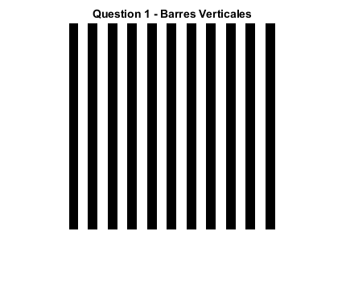 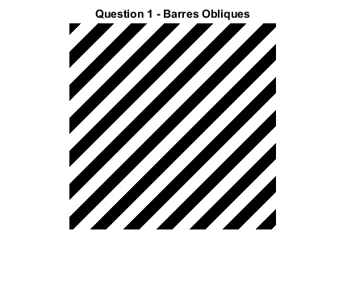 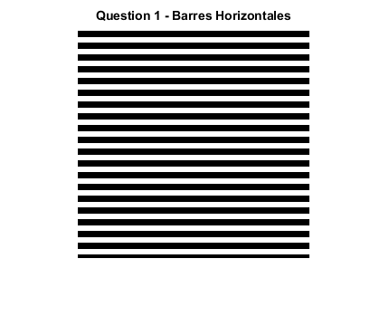 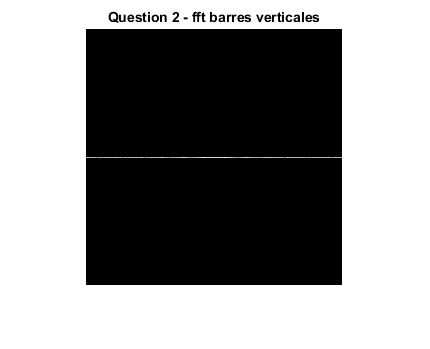 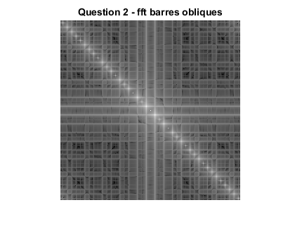 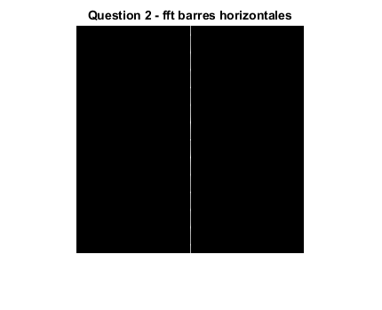 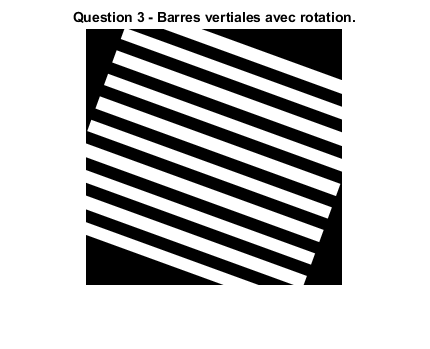 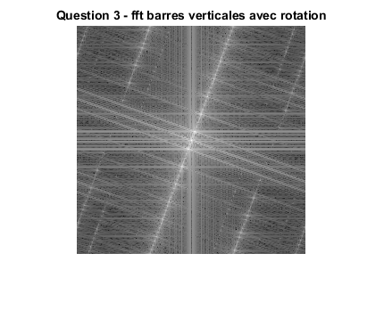
Exercice 4
src = imread('maillot.png');
figure;
imshow(src);
title("Image de depart");
ffti = fft2(src);
spectre = fftshift(abs(ffti));
figure;
imshow(log(1+spectre), []);
title("Question 1 - spectre de l'image");
phase = angle(ffti);
figure;
imshow(phase, []);
title("Question 1 - phase de l'image");
q2 = imread('E4_Q2.png');
figure;
imshow(q2, []);
title("Question 2");
[w,h] = size(spectre);
gaussian_mask = fspecial('gaussian', [w,h], 20);
spectre_gauss = gaussian_mask.*spectre;
fft_gauss = ifftshift(spectre_gauss).*cos(phase) + ifftshift(spectre_gauss) .* sin(phase)*1i;
img_gauss = ifft2(fft_gauss);
figure;
imshow(img_gauss, []);
title("Question 3 - image avec filtrage spectral passe-bas");
high_gaussian_mask = fspecial('gaussian', [w,h], 100);
i_gauss = zeros(w,h);
i_gauss(1:w, 1:h) = max(high_gaussian_mask(:));
high_gaussian_mask = i_gauss - high_gaussian_mask;
high_spectre_gauss = high_gaussian_mask.*spectre;
high_fft_gauss = ifftshift(high_spectre_gauss).*cos(phase) + ifftshift(high_spectre_gauss) .* sin(phase)*1i;
high_img_gauss = ifft2(high_fft_gauss);
figure;
imshow(high_img_gauss, []);
title("Question 4 - image avec filtrage spectral passe-haut");
low_gaussian_mask = fspecial('gaussian', [w,h], 28);
low_gaussian_mask = low_gaussian_mask./max(low_gaussian_mask(:));
high_gaussian_mask = fspecial('gaussian', [w,h], 32);
high_gaussian_mask = ones(w,h) - (high_gaussian_mask./max(high_gaussian_mask(:)));
filter = ones(w,h);
filter = filter - low_gaussian_mask - high_gaussian_mask;
figure;
imshow(filter);
title("Question 5 - filtre passe-bande gaussien avant normalisation");
filter = filter./norm(filter,1);
band_pass = filter.*spectre;
band_pass_fft = ifftshift(band_pass).*cos(phase) + ifftshift(band_pass) .* sin(phase)*1i;
band_pass_img = ifft2(band_pass_fft);
BI = imbinarize(band_pass_img,-0.8);
figure;
imshow(band_pass_img, []);
title("Question 5 - image avec filtrage spectral passe-bande");
figure;
imshow(BI, []);
title("Question 5 - image avec filtrage spectral passe-bande seuillé, manches conservees");
low_gaussian_mask = fspecial('gaussian', [w,h], 11);
low_gaussian_mask = low_gaussian_mask./max(low_gaussian_mask(:));
high_gaussian_mask = fspecial('gaussian', [w,h],15);
high_gaussian_mask = ones(w,h) - (high_gaussian_mask./max(high_gaussian_mask(:)));
filter = ones(w,h);
filter = filter - low_gaussian_mask - high_gaussian_mask;
figure;
imshow(filter);
title("Question 6 - filtre passe-bande gaussien avant normalisation");
filter = filter./norm(filter,1);
band_pass = filter.*spectre;
band_pass_fft = ifftshift(band_pass).*cos(phase) + ifftshift(band_pass) .* sin(phase)*1i;
band_pass_img = ifft2(band_pass_fft);
BI = imbinarize(band_pass_img,-2.7);
BI = imerode(BI, strel('rectangle',[10,30]));
BI = imcomplement(BI);
figure;
imshow(band_pass_img, []);
title("Question 6 - image avec filtrage spectral passe-bande");
figure;
imshow(BI, []);
title("Question 6 - image avec filtrage spectral passe-bande seuillé");
img = im2double(src);
filtered_img = img + BI;
filtered_img(filtered_img>1)=1;
figure;
imshow(filtered_img, []);
title("Question 6 - image avec les rayures verticales du torse retirées");
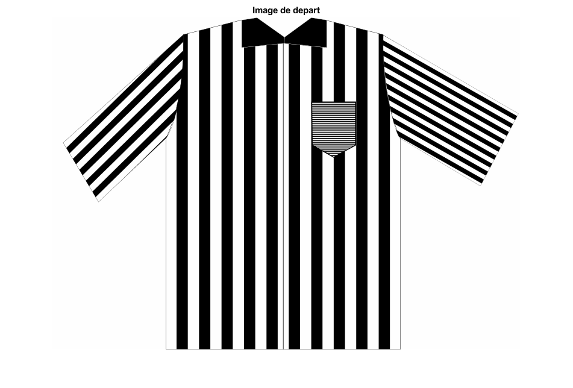 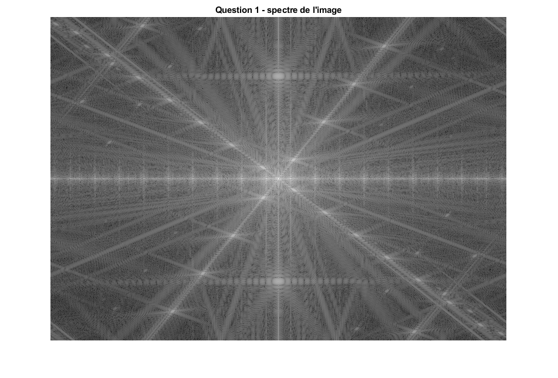 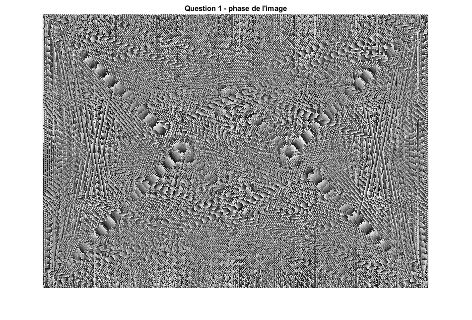 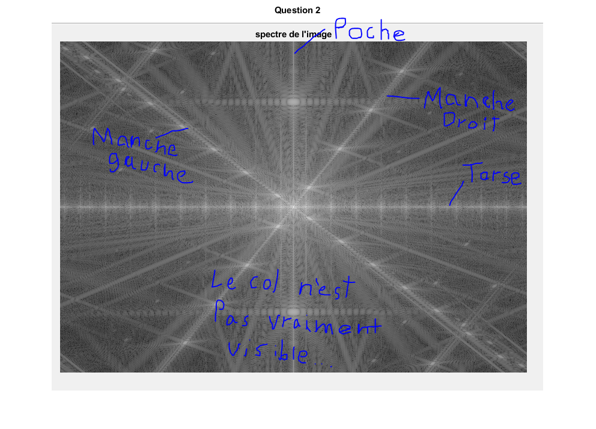 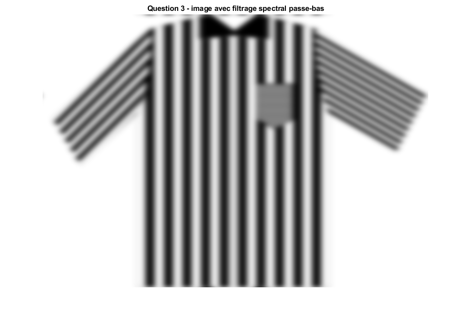 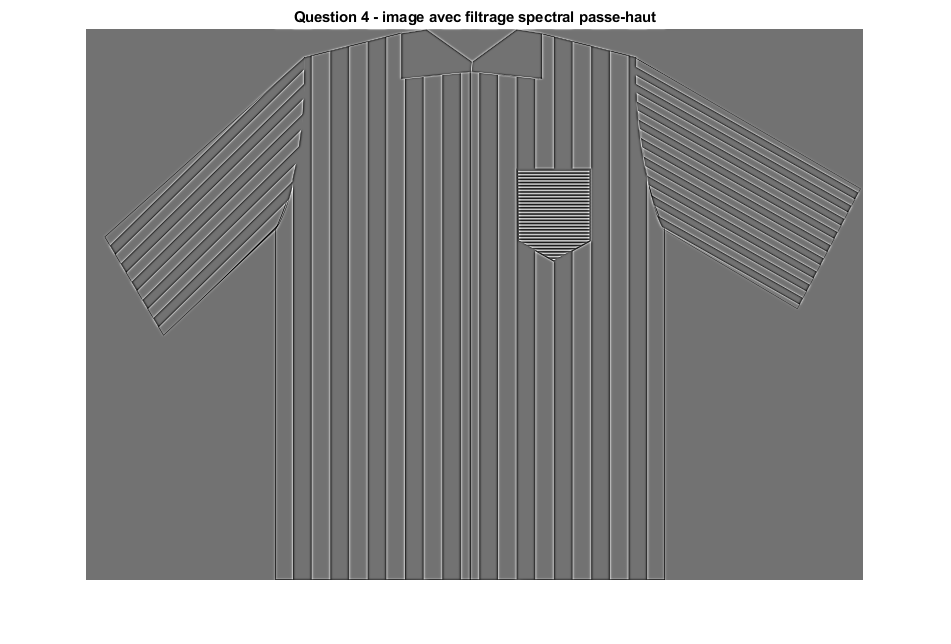 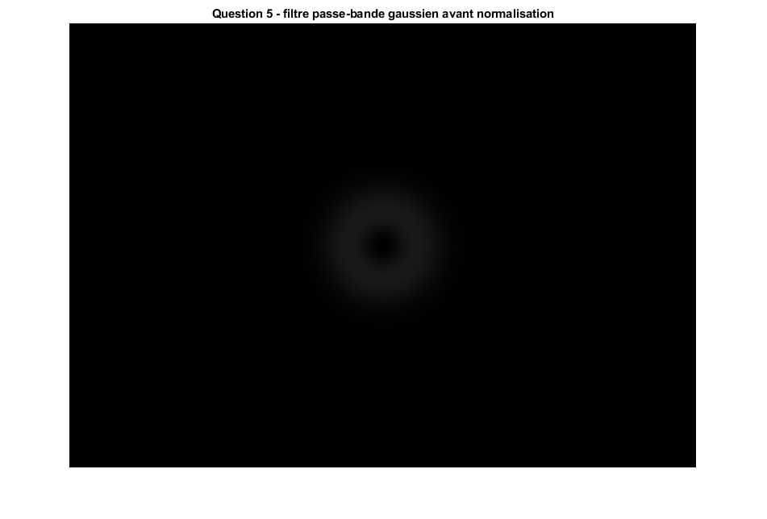 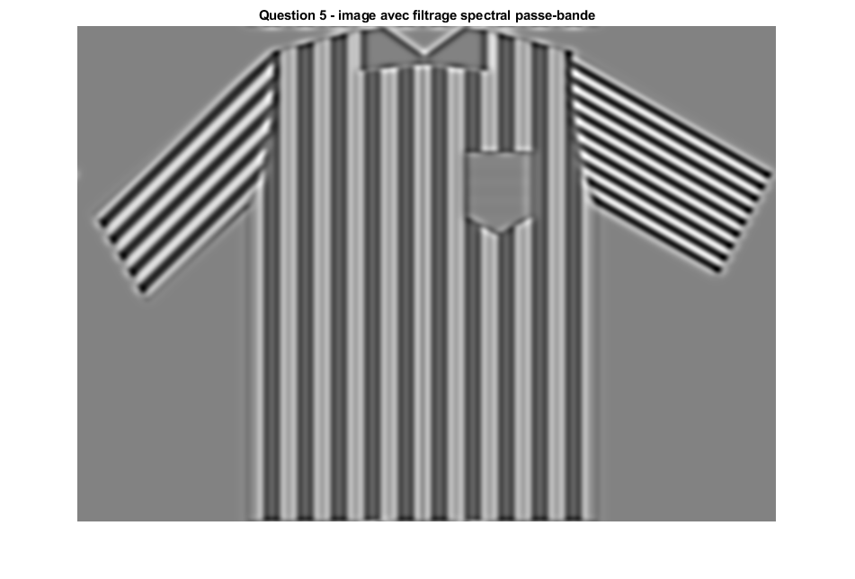 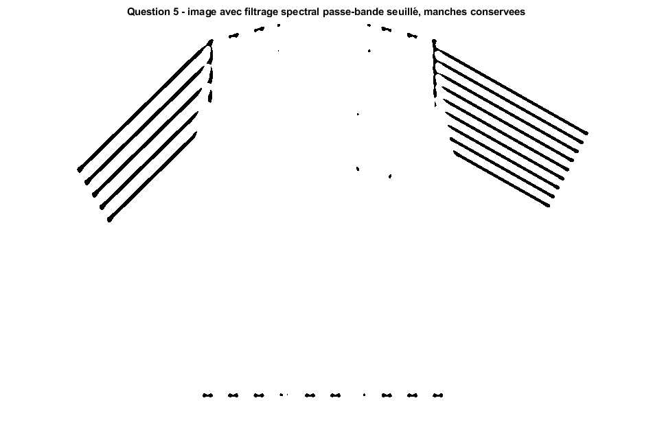 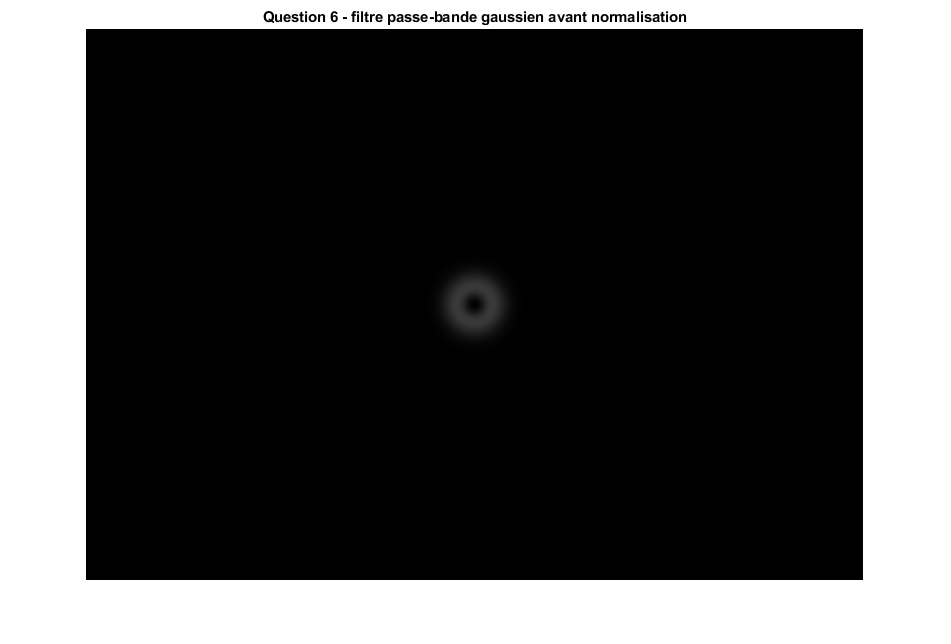 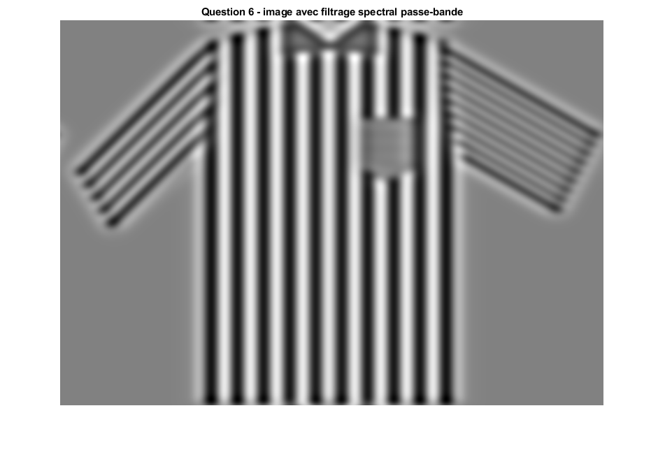 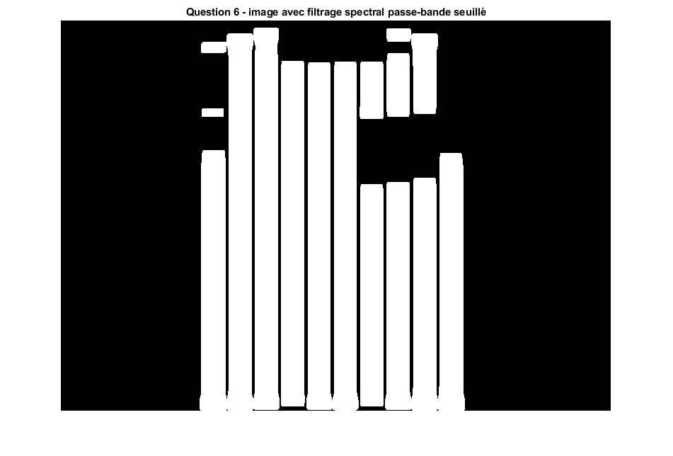 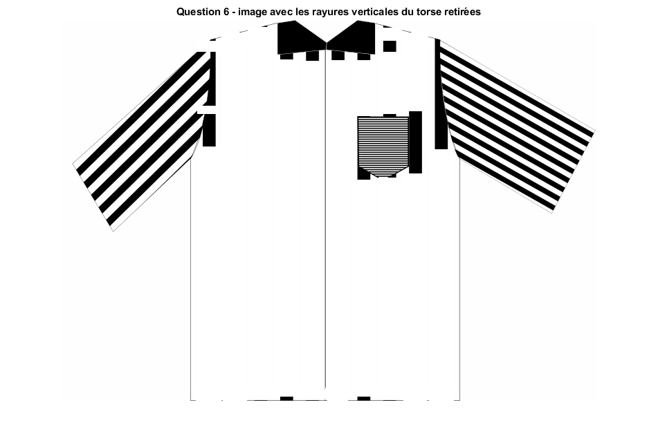